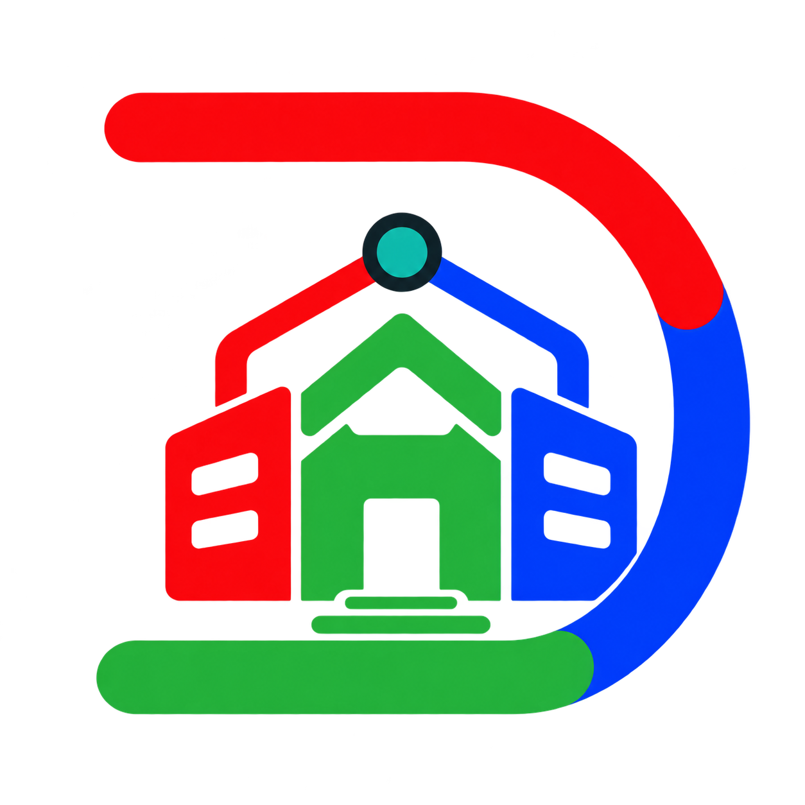

Civic infrastructure · in development
See the project. Follow the source. Know what happens next.
One spatial, source-backed view for understanding a data-center project: what is proposed, who is responsible, what supports a claim, and what still needs an answer.
Open Data Center Direct →
Data Center DirectCivic infrastructure